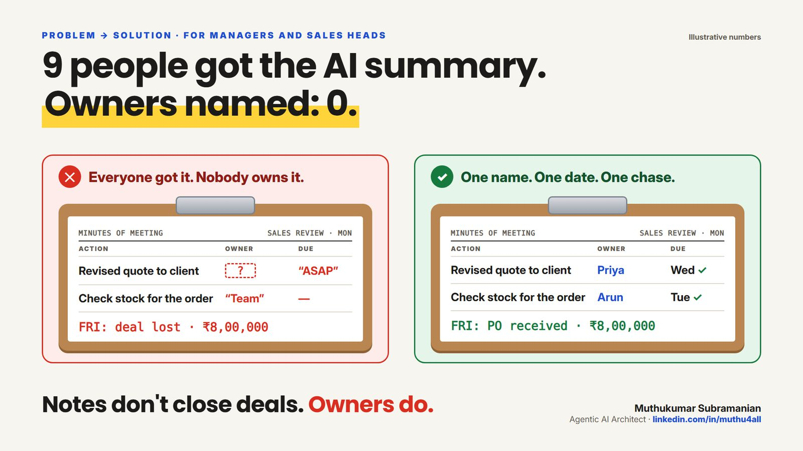
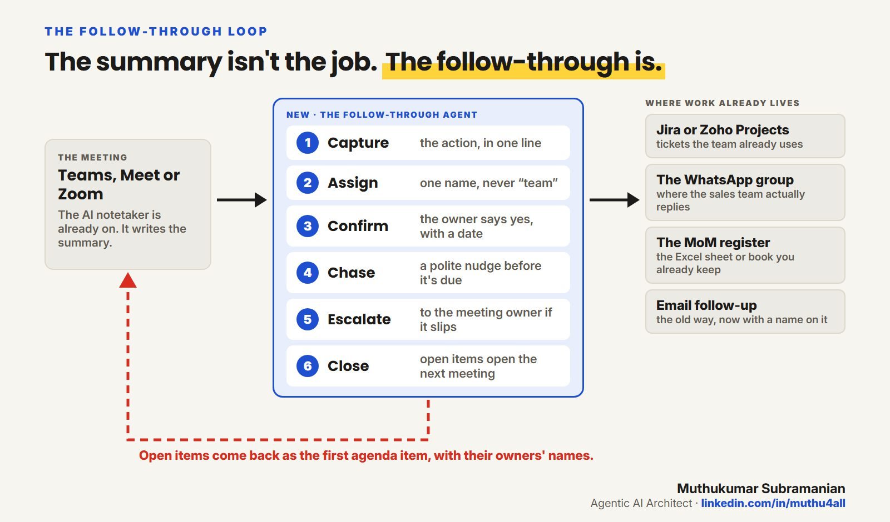
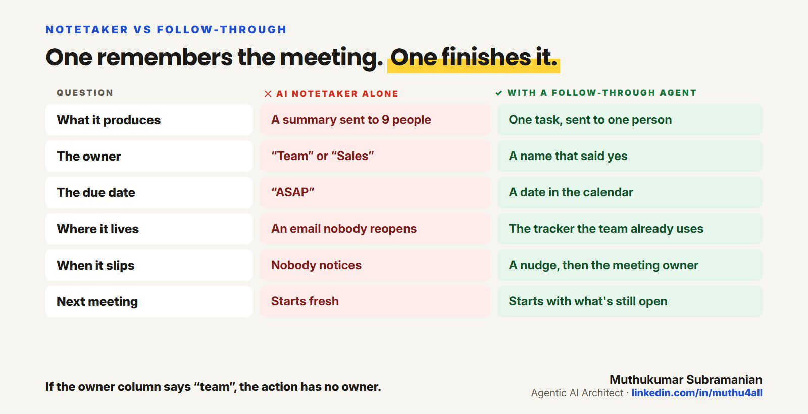

The AI Agent Wrote Down the Task. Nobody Did It. Who Lost the ₹8 Lakh Deal?
By Muthukumar Subramanian · Agentic AI Architect

Monday, 11 AM. Sales review, nine people on the call.
A textile client in Coimbatore wants a revised quote by Wednesday. Small change, ₹8 lakh order. Everyone nods. The AI notetaker is on, and ten minutes after the call, a beautiful summary lands in nine inboxes. Decisions. Next steps. A neat bullet: "Send revised quote to client by Wednesday."
Wednesday comes and goes. Thursday, the client calls a competitor. Friday, the competitor has the order.
The next Monday, the sales head asks, "Who was sending that quote?"
Nine people open the summary. The owner column says Team. (A composite story, and the numbers are illustrative.)
The AI wrote down the task perfectly. Nobody did it.
The problem: a summary everyone gets is a summary nobody owns
Here's my slightly unpopular view. AI notetakers haven't fixed the follow-up problem. In a lot of teams, they've made it worse.
Before, someone had to write the minutes. That person usually knew who'd promised what, and often chased it. Now the minutes write themselves, so nobody feels responsible for them. The summary arrives, everyone feels informed, and feeling informed gets mistaken for doing something.
The tools themselves are good at capture. Microsoft's Facilitator agent in Teams keeps live notes and tracks action items, and its tasks can go into Planner. Google Meet's "Take notes for me" adds suggested next steps to the notes doc. Fireflies can push action items into Jira or Asana, and Otter keeps a list of action items for each person.
So capture is mostly solved. What breaks is the old part, the bit we used to call the minutes-of-meeting register: one name, one date, and someone who checks.

The solution: an agent that follows through, not one that takes notes
The notetaker remembers the meeting. You need a second job done: a follow-through agent. It's not a new app. It sits between the meeting and the tools your team already lives in.
→ 1. Capture. Pull each action into one line. "Send revised quote to the Coimbatore client." Not a paragraph.
→ 2. Assign one name. Never "team", never "sales". If the meeting didn't name anyone, the agent asks the meeting owner before the summary goes out.
→ 3. Confirm. The owner gets a message: "You've got this, due Wednesday. Yes, or hand it on?" A task nobody accepted isn't assigned yet.
→ 4. Put it where work already lives. Jira, Zoho Projects, Planner, or honestly, the sales team's WhatsApp group, because that's where they reply. For many SMEs, it's still the MoM register in Excel, and that's fine.
→ 5. Chase politely. One nudge the day before it's due. Not five.
→ 6. Escalate, then close. If it slips, the meeting owner hears about it while there's still time. Next meeting, open items come first, with names beside them.
Notes don't close deals. Owners do.

👉 [GIF: B-day11-4-in-article-two-endings.gif]
Caption: One action item, one week, two endings. Same meeting, same summary. One of them had a name on it.
The new role that keeps this honest
Someone has to set up those rules and watch whether the agent is helping or nagging. You'll increasingly see this called an AI Agent Manager: a person who looks after an agent's behaviour the way a product manager looks after a product. Some companies call it AgentOps or AI operations. The titles are still settling.
In a 40-person SME, that's not a new hire. It's the sales coordinator who already chases everyone, now with an agent doing the boring part. In a large company, it's someone who decides how often the agent nudges, who it escalates to, and what it must never record.
The hard parts
→ Being chased by a bot can feel like surveillance. If the agent reports "Arun missed 3 deadlines" to the boss every Friday, people will stop saying yes in meetings. Use it to help owners finish, not to build a case against them.
→ The agent will pick the wrong owner. It hears "I'll check with Priya" and assigns Priya. That's why step 3 exists. Nothing counts until the person accepts.
→ Some meetings shouldn't be recorded. Salary discussions, legal matters, a client's confidential pricing. Agree which meetings are off the record, and stick to it.
→ Consent is not optional. Tell people the meeting is being transcribed, and let clients say no. India's DPDP rules are being phased in, so ask your legal team what consent you need. I'm not giving legal advice here.
→ It won't fix a culture of vague promises. If your leaders say "let's look into it" and never mean it, an agent will just send faster reminders for things nobody intends to do.
The opportunity
→ For managers and sales heads: take last month's meeting summaries. Count the action items with one real name and a real date. That number tells you how much revenue is sitting in inboxes.
→ For SME owners: you don't need an enterprise suite. A follow-through agent that reads the meeting notes and posts named tasks into your WhatsApp group would already beat most of what you have.
→ For IT services firms: "meeting-to-done" is a clean, sellable project. Connect the notetaker the client already pays for to the tracker they already use, with owners, nudges and escalation rules.
→ For founders: the gap isn't transcription anymore. It's follow-through for Indian teams, in Tamil, Hindi or English, inside WhatsApp, Zoho and Tally-era workflows.
The summary isn't the job. The follow-through is.
Your turn 👇
When an action item has no owner, whose fault is it: the meeting owner's or the team's? Pick one.
Tag the person in your team who always ends up sending the quote nobody else sent.